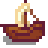

Maquette de bateau
Sauter à la navigation
Sauter à la recherche
| Maquette de bateau | |
|  | |
| Peut être placé comme décoration. | |
| Information | |
| Source | Prix |
| Autre(s) Source(s) : | Ferme de rivière |
| Prix de vente : | Ne peut être vendu |
La Maquette de bateau est un meuble. Elle tourne dans le stock quotidien de la scierie pour  750po ou au chariot de voyage pour un prix oscillant entre
750po ou au chariot de voyage pour un prix oscillant entre  250–2 500po.
250–2 500po.
Il est aussi disponible dans le catalogue de fournitures pour  0po.
0po.
Les joueurs ayant sélectionner la ferme de rivière lors de la création du personnage en aura un dans sa maison au début du jeu.
Historique
- 1.5 : Le décor peut être placé à l'extérieur.